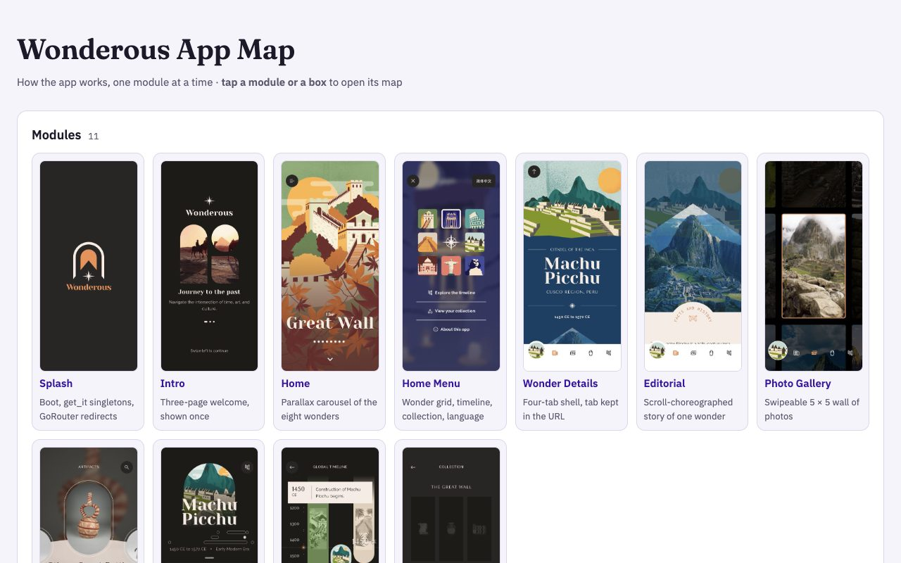
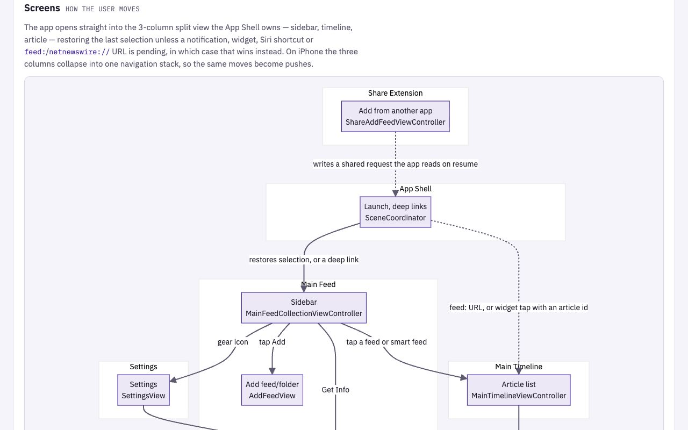
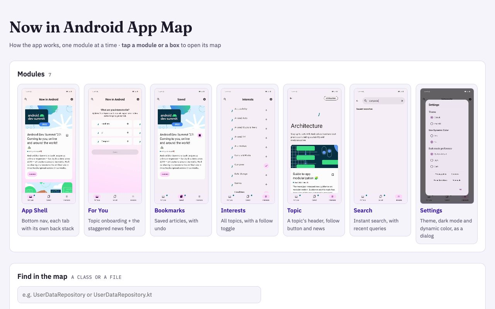
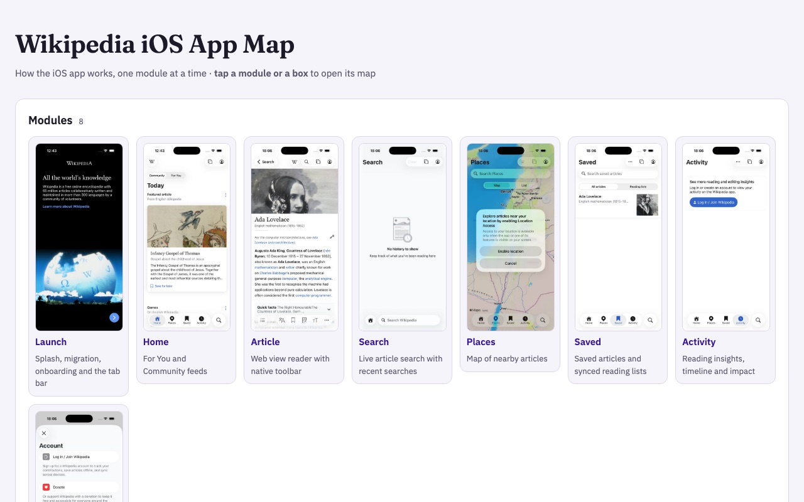
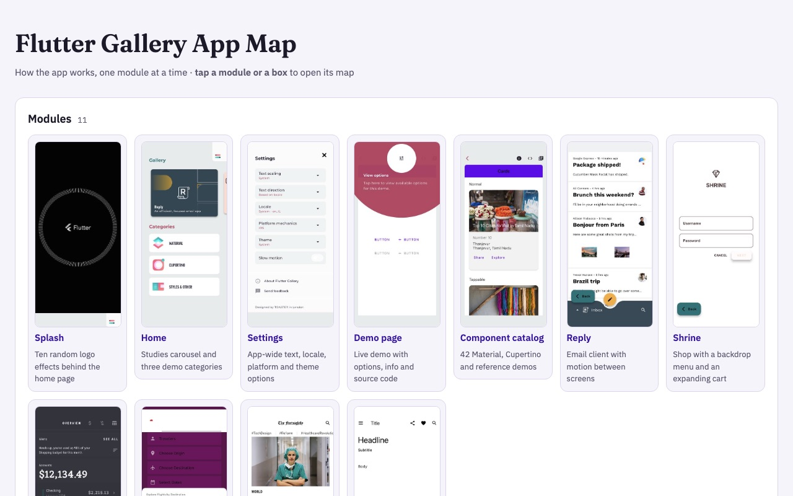
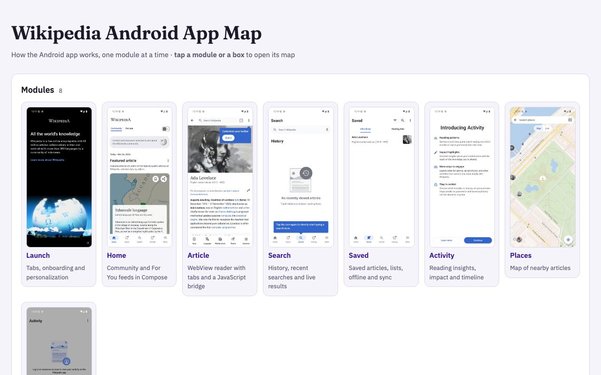

Open-source mobile apps, each mapped by the App Map skill. Click any class, method or arrow to open its real source.

The Flutter team's showcase app by gskinner (~31k lines, MIT). Popups also show each widget as it looks in the app.

Brent Simmons' RSS reader (~25k lines, MIT): a UIKit split view, a scene coordinator and a share extension.

Google's Jetpack Compose showcase app (~29k lines, Apache-2.0): view-models, offline-first repositories and sync.

The Wikimedia Foundation's official app (~209k lines, MIT): a UIKit tab shell around SwiftUI screens, a Core Data store and a web view reader.

The Flutter team's component gallery (~32k lines, BSD-3-Clause): 42 demos behind deferred imports and six full app studies.

The Wikimedia Foundation's official app (~124k lines, Apache-2.0): Compose screens and fragments, Room, and WorkManager sync.